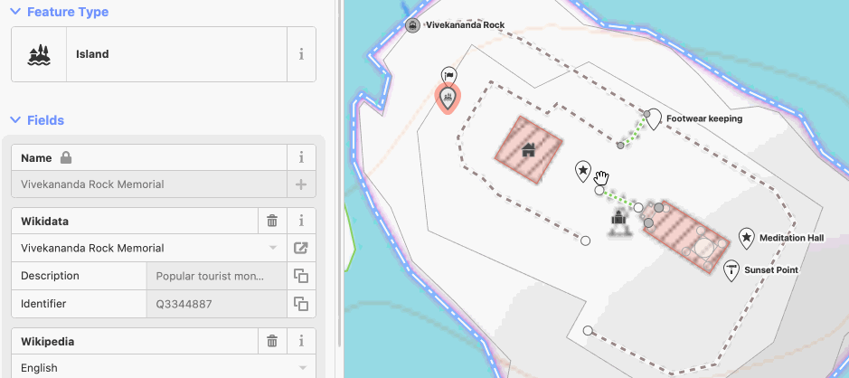

OpenStreetMap India
OpenStreetMap India
Join the volunteer community of citizens crowdsourcing a free and open source map of India using the OpenStreetMap Project.
Explore recent mapping activity in India
OpenStreetMap IndiaJoin the volunteer community of citizens crowdsourcing a free and open source map of India using the OpenStreetMap Project.
Explore recent mapping activity in India
OpenStreetMap data is available for free download and use per Open Data Commons Open Database License (ODbL). Various data download and export formats based on user needs. Check the wiki for more details.
